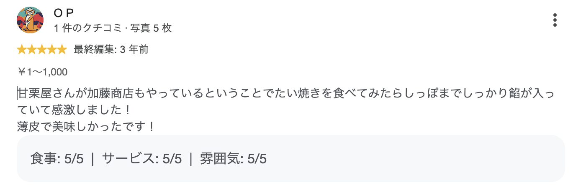

成田山門前｜薄皮たい焼き・天津甘栗
成田山の
門前で、
しっぽまで
おいしい。
成田山門前｜薄皮たい焼き・天津甘栗
「懐かしさが、心をほどく。」
昔ながらの町で、変わらない美味しさを今日も、心を込めて。薄皮のたい焼きと味自慢の天津甘栗で、お参りの行き帰りの「ひと休み」をお迎えします。

成田山門前｜薄皮たい焼き・天津甘栗
成田山門前｜薄皮たい焼き・天津甘栗
「懐かしさが、心をほどく。」
昔ながらの町で、変わらない美味しさを今日も、心を込めて。薄皮のたい焼きと味自慢の天津甘栗で、お参りの行き帰りの「ひと休み」をお迎えします。
参道を歩いてお参りを済ませたら、甘いものが欲しくなります。店先で、焼きたてをどうぞ。
せっかくなら、できたての温かいものを。たい焼きは一匹ずつ丁寧に焼き上げています。
家族や職場へ、成田山のお土産を。持ち帰りやすい天津甘栗を店頭でご用意しています。
「外はパリッと香ばしく、中はたっぷりのあんこ。一匹ずつ丁寧に焼き上げた、やさしい味わい。」
店先ののぼりにある「しっぽまでおいしい!!」は、加藤商店のたい焼きの合言葉です。

店頭の看板に掲げているとおり、「薄皮 鯛焼 あずきたっぷり」。あんこには十勝産あずきを使っています。定番のあずきのほか、カスタードクリームもご用意しています。

作り置きに頼らず、一匹ずつ丁寧に焼き上げています。「注文してから焼いてくれるので熱々を食べることができます」というお声もいただいています。少しお待たせすることがありますが、焼きたてをお渡しします。

たい焼きの隣では、「天津甘栗 味自慢 加藤」の看板で甘栗を販売しています。食べ歩きにはたい焼きを、お土産には甘栗を。一度のお立ち寄りで両方お求めいただけます。


写真は現在公開されている貴店のお写真をお借りしています。ほかにお使いになりたい写真がありましたら、差し替えてご用意いたします。
クチコミは横にスクロールしてご覧いただけます



Googleマップに投稿されたクチコミを、そのまま掲載しています。
木の看板と紺色の日除け、大きなソフトクリームの置物が目印です。
窓口の横にある食券機で、お好みの品の食券をお求めください。
食券をスタッフにお渡しください。一匹ずつ焼き上げます。
焼きたてをお渡しします。あんバターは、溶けないうちにどうぞ。
9時00分〜17時00分位です。たい焼きの最終受付は16時までとなります。
成田山の門前、千葉県成田市本町337-1 です。木の看板「加藤商店」と紺色の日除けが目印です。
十勝産あずき、カスタードクリームのほか、あんバターたい焼き、さつまいも、栗あんなどをご用意しています。時期によって内容が変わりますので、店頭でご確認ください。
はい、お持ち帰りいただけます。「家に帰ってトースターで焼いて食べたら、サクサクで美味しかった」というお声もいただいています。
天津甘栗、やきいも、ソフトクリーム、レモネード、コーヒーなどがあります。夏はかき氷もご用意しています。
いつもの笑顔に、いつもの味。
今日も、あなたの笑顔に会いたくて。
成田山へお越しの際は、どうぞお気軽にお立ち寄りください。

「スタッフ管理のアカウント始めました！おすすめ商品やイベント情報を投稿していきますので、是非、フォローお願いします！」
@kato_syoten.505
Instagramで見る・フォローする| 店名 | 加藤商店（成田山門前） |
|---|---|
| 所在地 | 〒286-0026 千葉県成田市本町337-1 Googleマップで見る |
| 営業時間 | 9時00分〜17時00分位 （たい焼き最終受付16時まで） |
| 電話番号 | 090-9562-9919 |
| 取り扱い | たい焼き／天津甘栗／やきいも／ソフトクリーム／レモネード／かき氷／コーヒー |
| @kato_syoten.505 おすすめ商品やイベント情報を投稿しています。 |